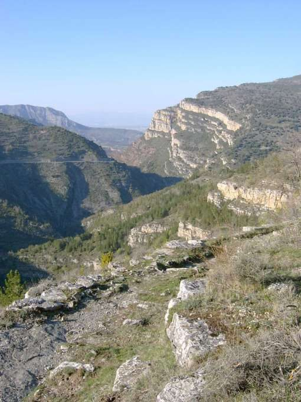
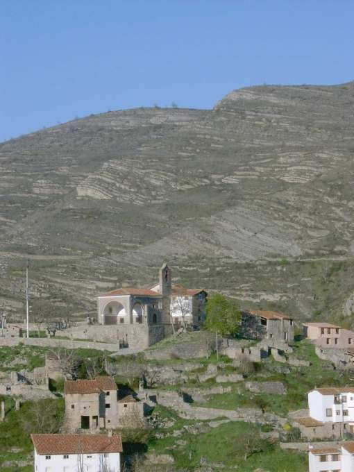

Cañón del Leza
Soto en Cameros · comarca del Leza
- Distancia4,2 kmida y vuelta
- Desnivel270 m
- Tiempo orientativo1 h 30 min
- Dificultadmedia-baja
- Época recomendadatodo el año
- Terrenosenda
Normalmente todos los que hemos viajado hasta Soto en Cameros por carretera nos hemos sentido sobrecogidos al atravesar el Cañón del Río Leza, en el tramo comprendido entre Leza y Soto en Cameros. Con el tiempo uno se acostumbra a esta impresión, pero existe una forma mucho más indicada para meternos dentro del paisaje del cañón, y de ella trata este “Lugar con encanto”.
De la parte alta del pueblo de Soto en Cameros, junto a la Ermita de Nuestra Señora del Cortijo, parte un precioso sendero que transita por la margen derecha de la garganta. El recorrido, además, está señalizado mediante marcas pintadas ya que cuenta con otro aliciente, y es que pasa por dos yacimientos de icnitas muy didácticos.
Todo esto, junto con la compañía del vuelo de numerosos buitres son algunos de los atractivos que puede ofrecernos este coqueto paseo.


Recorrido
Partimos de la plaza de Soto y ascendemos entre empinadas y estrechas calles en busca de la Ermita de Nuestra Señora del Cortijo. Al llegar a ella estamos ya en lo más alto del pueblo, y seguramente habremos visto durante el ascenso algunas indicaciones relativas los yacimientos de icnitas Soto1 y Soto2. Desde la ermita no nos costará mucho trabajo localizar el lugar por el que debemos continuar nuestro recorrido; se trata de un sendero que arranca a media altura y que progresa por la pared del cañón.
Nada más nos queda que disfrutar del paseo; el primer yacimiento está cerca y al segundo nos costará llegar un poquito más.


{kind=link}
{kind=link}